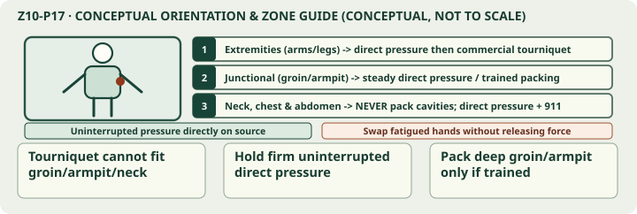

Z10-P17 · Wilderness medicine · New manuscript
Control junctional bleeding where a tourniquet cannot be placed
Recognize life-threatening groin, armpit, or neck bleeding and maintain continuous targeted pressure until EMS arrives.
When it applies · Severe bleeding in junctional zones (neck, shoulder/armpit, groin/hip) where extremity tourniquets cannot physically encircle the limb.
Equipment · Clean sterile gauze (or hemostatic gauze if carried and trained), gloves, and continuous two-handed direct pressure.

Actions
- Call 911 immediately and expose the junctional wound completely so pressure lands straight on the bleeding vessel rather than surrounding tissue.[M01, T02]
- Apply firm, continuous, uninterrupted direct pressure straight into the bleeding source; responders trained in Stop the Bleed may pack clean or hemostatic gauze tightly into deep groin/armpit cavities (NEVER pack the neck, chest, or abdomen) and hold continuous pressure.[M01]
- Keep the patient warm and insulated against shock while maintaining steady downward pressure without releasing to check until EMS assumes control.[M01, M05]
Failure recognition · Trying to wrap an extremity tourniquet loosely around a hip or neck, or packing gauze into a chest or abdominal stab wound.[M01, M02]
Verify · Confirm steady uninterrupted pressure directly on the bleeding point, zero packing of neck/chest/abdomen, and active EMS response.[M01, T02]
Stop or change course · Never release effective pressure prematurely; if caregiver hands fatigue, swap hands smoothly with a second responder while keeping constant downward force.[M01]
Evidence and editorial notes
- M01 · American College of Surgeons · STOP THE BLEED Training Course (current web edition)
- Section: Ensure Your Own Safety; Find Life-Threatening Bleeding; Compress · Conditions: Lay responder encountering severe external hemorrhage
Support: Ensure scene safety first, call 911, expose the wound to locate life-threatening bleeding, and apply firm continuous direct pressure with clean gauze or cloth.
Limitations: Does not replace formal hands-on Stop the Bleed training or EMS trauma care. · Conflicting evidence: None across ACS/ARC guidelines.
Editorial note: Separates life-threatening arterial/venous hemorrhage from minor scrapes. · Specialist reviewer: Wilderness medicine and trauma EMS
Primary source · checked 2026-11-24 - M02 · American College of Surgeons · STOP THE BLEED Training Course (current web edition)
- Section: Wound Packing and Commercial Tourniquet Application · Conditions: Severe extremity bleeding uncontrolled by direct pressure; trained responder with commercial windlass tourniquet
Support: Apply a commercial tourniquet high and tight on an extremity (never over a joint), tighten until bleeding stops, note the application time, and leave it in place for EMS.
Limitations: Improvised tourniquets fail frequently; formal hands-on training is required before operational reliance. · Conflicting evidence: None; strictly distinguishes commercial tourniquets from improvised bands.
Editorial note: Governs extremity hemorrhage escalation and strict EMS handoff documentation. · Specialist reviewer: Trauma EMS and wilderness medicine
Primary source · checked 2026-11-24 - M05 · NIH / MedlinePlus · Shock (current web edition)
- Section: Recognizing Circulatory Shock and Positioning · Conditions: Injured or ill patient with pale cool clammy skin, rapid weak pulse, confusion, or dizziness
Support: Treat suspected shock as a life-threatening emergency: call 911, control external bleeding, keep the person warm and insulated from cold ground, and do not give food or drink.
Limitations: Field responders cannot diagnose internal hemorrhage or administer IV fluids. · Conflicting evidence: None; reinforces keeping suspected shock patients NPO and warm.
Editorial note: Core shock recognition and stabilization boundary in Z10. · Specialist reviewer: Emergency and wilderness medicine
Primary source · checked 2026-11-24 - T02 · American Red Cross · First Aid Steps (current web edition)
- Section: First Aid Steps > Call 9-1-1 · Conditions: Lay emergency response to unresponsiveness, abnormal breathing or severe bleeding
Support: Activate EMS and get needed equipment. Follow dispatcher directions and act within training.
Limitations: Remote locations may delay EMS arrival, requiring sustained stabilization after activation. · Conflicting evidence: None; aligns with NPS-E.
Editorial note: Mandates early emergency activation and dispatcher adherence. · Specialist reviewer: EMS and wilderness medicine
Primary source · checked 2026-11-24
Source lineage · ACS STOP THE BLEED; new manuscript · Classification · New manuscript.